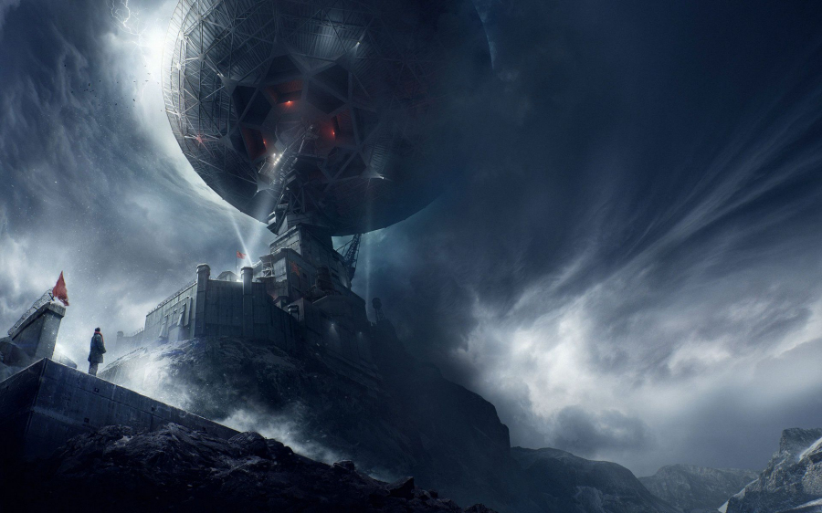

Some time back, SF4E brought you the news that David Benioff & D.B. Weiss, seasoned showrunners of Game of Thrones, would write and produce a new trilogy of Star Wars films. But then something unexpected happened. The pair of screenwriters was snatched from Disney by Netflix after negotiating with the streaming giant an exclusive long-term deal worth $200 million – a staggering sum of money that even Disney – or Amazon, who was the 3rd party in the three-way bidding war for the prized tandem of script writers – weren’t willing to better. Ever since I have heard this news, I was secretly praying that their first series for Netflix (as there was no doubt in my mind that it would be a television series and not a feature film) would be sci-fi. There was certain logic in my thought process – the duo’s last, and best known, show was fantasy, so I reasoned that they will want to try something different this time – not mentioning that well written science fiction, just as the fantasy genre, is a very good crowd pleaser too.
And my prayers were answered – oh boy – more than answered. It has been announced, that their first show produced exclusively for Netflix will be a sci-fi drama television series based on the multi award-winning and universally acclaimed science fiction book trilogy ‘Remembrance of Earth's Past’ by Chinese writer Liu Cixin. The trilogy of books consist of novels: The Three-Body Problem, The Dark Forest and Death's End, but similarly to Game of Thrones, which was actually the title of only the first book in a series of fantasy novels collectively known as ‘A Song of Ice and Fire’, but lent its name to the whole TV series nonetheless, the chances are that the showrunners will likewise adopt the name of the first book in the trilogy – The Three-Body Problem – for the entire television series, as it is more catchy.
The series portrays an alternative recent past and distant future of our planet where the Earth is preparing for an arrival of a large invasion fleet of a hostile and superior ancient alien civilisation from Alpha Centauri tri-solar system (hence the title of the first book) whose society and technology is so much more advanced compared to that of the humans’, that they consider us mere bugs that need to be exterminated in order to make space for the flight of their superior race from the unstable orbit of their home world that is suffering extremes of heat, cold and strong gravitational pull of its three suns threatening the ultimate destruction of the entire planet along with its civilization in the near future.
Liu Cixin’s trilogy is the most ambitious science-fiction series we’ve read, taking readers on a journey from the 1960s until the end of time, from life on our pale blue dot to the distant fringes of the universe. We look forward to spending the next years of our lives bringing this [story] to life for audiences around the world. David Benioff & D.B. Weiss
The storyline of the series delves deep into Chinese culture and history, and much of the narrative is set primarily in mainland China – meaning that also most of the main characters are, naturally, Chinese too – which might prove particularly challenging during the casting, considering the controversial tendency of the western screenwriters to ‘whitewash’ sources of Asian provenance (step forward the live-action film adaptation of the Ghost in the Shell).
David Benioff and D.B. Weiss will co-write and executive produce the show with Alexander Woo (best known to TV viewers for writing several episodes of the HBO fantasy horror drama series True Blood). The project boasts an impressive line-up of showrunners. In addition to Benioff, Weiss, and Woo, American film director and producer Rian Johnson and movie heavyweight Brad Pitt will serve as executive producers. And, to assure the integrity of the TV adaptation, trilogy’s author Liu Cixin along with Ken Liu (the translator of the first and third books of the trilogy to English for western audiences, who himself is an accomplished sci-fi writer) will serve as consulting producers.

The show is still only in the early stages of development, therefore all other details, such as the release date, number of episodes per season, or series’ cast are yet to be confirmed. One thing is certain though – an enthralling storyline of the sci-fi trilogy combined with the wealth of material contained within the novels (300, 400 and 600 pages respectively for the first, second and third book in the series) should assure multi-season run of the show with many episodes per season. I don’t know about you, but I personally cannot wait to see it!